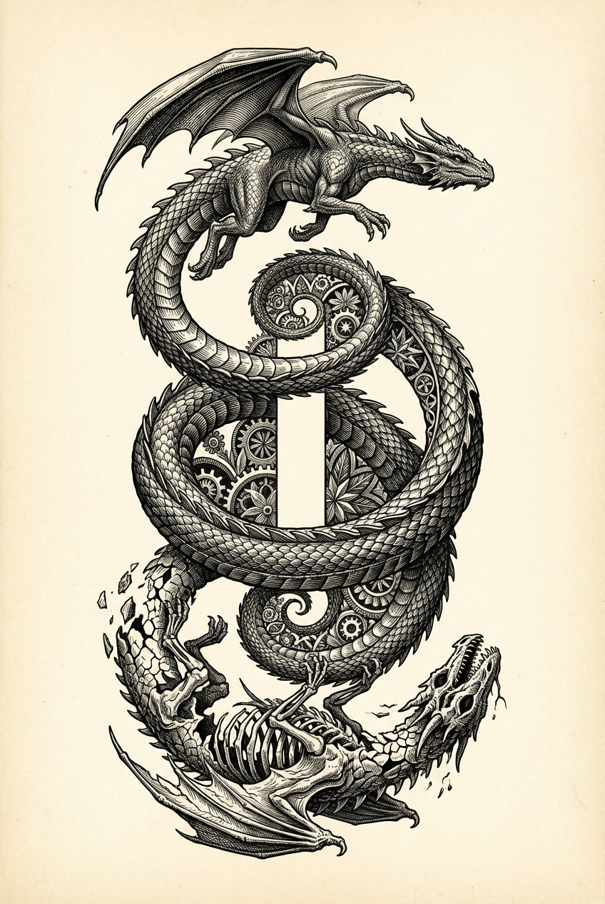

Part I
Chapter 4: The Inherent Rhythm
Estimated reading time: 13 min
Breathe. Before you name the cycle, feel it moving.
Voltage: Deepening
Let the rhythm reveal itself before you try to master it.
The “destruction” here is inward and symbolic. If intensity rises, stop. Feel your feet, orient to the room, and lengthen the exhale; resume only when you are back within capacity.
The Eternal Cycle
A cyclical pattern moves through reality—creation and destruction as one rhythm, not opposing events.
You can see it when a massive star collapses and explodes, dispersing elements that may later enter other worlds. Nothing in the ending intends what follows.
You can see it when forest fire devours a canopy and, in some ecologies, dormant seeds later meet the light.
And you can see it in the ever-shifting landscapes of your own inner world.
An ending can seed a beginning, and every beginning carries an ending within it.
This is one of the deeper patterns within the Entangled
Firmament: not a break in reality, but one of its native
movements.
The rhythm is older than any story you tell about your life, and
intimate enough to be moving in your breath right now.
Pause, Ground, Return
"One round is enough to tell you whether to continue or pause."

Beyond Resistance
Recognize the underlying rhythm moving through reality. When disruption breaks the surface, meet it as part of that movement.
The pattern repeats across scales: tissues renew at different tempos, old habits lose charge, and one phase of a bond ends so another can begin more honestly.
Understanding this rhythm lets you move with it rather than struggle against it.
The Dragon teaches: stability isn’t freezing the cycle, but finding your footing inside it.
When resistance rises, start by naming the season you are in: clinging, cracking, clearing, or beginning again. Name one place where you feel stuck without turning the feeling into a verdict. Then choose one action small enough to honour change without forcing it: clear one item from a cluttered desk, wash one cup, or take a short walk.
The next honest movement needs room to appear.
Aligning With the Cosmic Rhythm
The Creator–Destroyer archetype reveals a fundamental truth: impermanence is not only loss. It is how life moves.
Dissolution makes way for emergence. Compost feeds what later blooms. Life arises from decay. Form crystallizes, then dissolves again.
Freud heard a similar polarity in his later drive theory: Eros gathers, binds, and joins; the death drive, later often called Thanatos, pulls toward dissolution, repetition, and return.1 The Path of the Dragon does not make these forces enemies. It asks whether the dissolving current can be held cleanly enough to release what is finished, while Eros binds what remains into fuller life.
Put more simply: Flow becomes form. Form shapes flow. The pattern evolves by returning.
This pulse flows through all things—including you.
It does not stay in stars. It moves through a Tuesday morning as
surely as it moves through a dying sun.
The scale changes; the rhythm still rhymes. What a star does with
pressure, a life does with grief, timing, and form.
Vignette: Relationship Repair
After a harsh argument, they go silent for three days. On the fourth morning, one partner feels the familiar armor begging to close again and recognizes the dissolving face of the Creator–Destroyer: the old pattern of score-keeping must be allowed to die.
A brief note names the hurt and asks whether they can speak cleanly. That evening, they sit together without their usual weapons. The forming face of the same current appears there: not as romance, but as honesty strong enough to build a new boundary. They stop dragging hard things into midnight.
Over the next week, deliberate integration practice follows: more rest, a pause before hard truths, and eventually the release of score-keeping. The relationship does not “return to normal.” The old bond burns away, and a more honest one may emerge.
To align with this rhythm is conscious engagement: a choice to move with the forces that shape reality rather than exhausting yourself by resisting their flow.
What we call stability is often only a brief shape in moving water.
Impermanence is where freedom learns to move.
Three Core Teachings
- Transformation is the baseline. What appears as destruction can be the painful clearing of space for the next phase of becoming. The question is not whether you will change, but whether your vessel can meet change with timing, return, and care.
- Freedom lives in fluidity. Suffering deepens when resistance hardens around an old shape. A fixed identity narrows the channel until Dragon’s Fire has nowhere clean to move. Freedom returns when that fire stays held, ethical, and responsive to life rather than locked inside one self-image.
- Release is continuous. Like seasons turning, shedding keeps happening. Embracing the “death” aspect means letting go of patterns and identities that have grown too tight—outdated beliefs and restrictive habits. This clearing makes room for vitality and a more truthful form.
A living being is not asked to keep one face forever. Seasons change what they call forth. The same life may need surrender here, firmness there, and stillness elsewhere. Changing form is not betrayal. Betrayal begins when the axis is abandoned and the core is sold to avoid the rhythm.
Echoes of the Cycle
The Ouroboros is not a decorative emblem. The serpent devouring its own tail shows endings and beginnings as one curve: completion and initiation touching at the same point.
On the path, the Dragon meets this as molting: what once protected the body eventually has to split so growth can continue.
The seasons show the same truth in ordinary life. Winter does not argue with spring. It shelters what spring will reveal.
And Kali does not come to flatter the ego. She comes with knives for illusion. Her fierceness is not senseless; it is the force required to sever us from dead weight, false selfhood, and the comfort of our smaller cages. What cuts through illusion also clears the ground for renewal.
We do not invoke that force to destroy our lives or the people in them. We invoke it inwardly, offering rigid identities, exhausted beliefs, and comfortable cages to the fire so that what is true can remain.
These images are mirrors: one rhythm wearing many bodies.
Their force lies in recognizing the cycle’s shape when it appears in ordinary life.
A Moment in the Cycle
Name what is dissolving. Name what is beginning, even if faint. Then listen for the body’s next need: movement, stillness, water, or rest. Choose one coherent move that matches the season.
If it helps, write the two names down: what has grown too tight, and what is quietly asking to begin.
The rhythm asks for attention, timing, and action.
Living the Cycle
The Path of the Dragon is a practice of conscious participation in becoming. To live this rhythm is to know whether a day is asking for release, shelter, or one honest move.
That is agency without force: not mistaking control for ground, and not mistaking intensity for timing.
Dragon’s Fire here banks itself: intensity held with enough care that
endings can become beginnings without needless harm.
It shows up as the message not sent too soon, the room you finally let
go quiet, the honest no that leaves tomorrow unburdened.
It is the ember that survives the ending and warms the hand that begins again.
Knowing the dance is not yet dancing it.
The Art of Cyclical Mastery
Working with the Creator–Destroyer pulse requires cyclical literacy: recognizing the phase, aligning with it, integrating what it changes, and letting mastery mean presence rather than control.
In plain language: Recognition → Alignment → Integration → Mastery.
Recognition: Reading the Signs
Recognition begins by locating the present phase. Cycles rarely announce themselves clearly. They whisper through:
- Energy shifts: fatigue, restlessness, or anticipation may accompany a turning phase, but none explains itself. Check the wider conditions before naming what is ending or beginning.
- Resistance patterns: what you push against may be asking for release, protection, rest, or a firmer boundary. Check the wider conditions.
- Outer mirrors: moments when the world seems to answer an inner shift—sometimes felt as synchronicities, hints to notice rather than instructions to follow.
- Dreams and intuitions: the unconscious often senses change before the conscious mind does.
The work is to read the weather early: a mood that keeps returning, a resistance that will not go quiet, a sense that something is complete before the mind wants to admit it.
Alignment: Dancing With the Current
Alignment is the conscious choice to move with the cycle instead of against it.
In dissolution, honour grief, create space, and do not rush the fallow.
In emergence, remain open, take small inspired action, and protect what is still tender.
Alignment is rarely dramatic. It is usually a quiet refusal to force what is ending, or to pry open what is only beginning.
Integration: Stability Within Flow
Integration is the capacity to remain centered in the midst of change.
Breath anchors. Somatic awareness tracks how the cycle lands in the body. Feeling is allowed to move without overwhelm. Thought stays flexible enough to leave paradox unresolved.
This is stability within flow: not frozen, not scattered, but available.
Mastery: Wielding Cyclical Power
Mastery shifts the posture from enduring cycles to working with them.
Mastery isn’t control.
Mastery is presence strong enough to end cleanly, protect the fallow, welcome emergence, and steady another person without carrying what belongs to them.
The fire has learned timing: when to burn with purpose, when to bank itself, and when to keep the fallow warm.
This is how the rhythm stops being an idea and becomes a way of living.
Navigating the Depths
The rhythm exposes four fault lines: dissolution-terror, premature action, outcome-gripping, and loneliness.
If you’ve lived a season that felt like breakdown—where these fault lines first became visible—you may recognize the same currents here. Meet them with the breath, record, and honest pacing you have today.
The Terror of Dissolution
When relationships, careers, identities, or beliefs dissolve, primal fear can surge.
Your nervous system may interpret transformation as existential threat.
If panic spikes during endings, do not decide from the spike. Let the body settle first: unclench the jaw, look around the room, and wait until the next step is clean.
Learn to distinguish actual danger from the discomfort of release: your form can change while the Soul Body carries memory, values, authorship, and choice through the change. Witnessing attention can notice that movement; it is not the owner of who you are.
The Seduction of Premature Action
In the stillness of the fallow, the urge to “do something” can be intense.
Emptiness can feel unbearable.
Practice waiting long enough to feel the difference between inspired action and anxious activity. True emergence cannot be forced; gestation has its own timeline.
One root of burnout lives here: turning spirituality into a refusal of winter, trying to force revelation where rest and fallow are what life is actually asking for. Yet burnout is not only a problem of personal pacing. It can be the body reporting a structural mismatch among demand, adaptation, pace, and capacity. Rest may be necessary without being sufficient: the work, role, relationship, practice, or conditions that keep producing overdrive may also need to change.
The Attachment to Outcomes
Subtle control often lingers beneath a welcome change, trying to dictate how transformation should unfold.
Release the illusion of control while retaining your agency. Participate fully, then let the form of the outcome surprise you. If you notice yourself gripping a result, return to intention and one small honest step.
The Loneliness of Transformation
Transformation often moves at rhythms others don’t share.
Release can feel lonely, or emergence can arrive while others are still in retreat.
Seek resonance, not approval. Find your rhythm and those who honour it. If you feel alone in the cycle, name your phase to a trusted person and ask for the support you need.
These challenges are not signs that the rhythm has failed. They are where the rhythm asks for your deepest honesty.
If one of them is alive in you now, start there: name the phase, find the honest constraint, take the clean next move.
Building Your Alchemical Vessel
Living this rhythm requires an Alchemical Vessel—a practice container simple enough to survive ordinary life.
Build it from three things:
- Sacred Space: one uncluttered place that tells the body it can soften.
- Sacred Time: a small daily or weekly window you actually keep.
- Sacred Record: a brief note of your state, one coherent action, and what followed.
Sacred Space can be as simple as a chair by a window. Sacred Time does not need to be large; it needs to be real. Sacred Record can be three lines in a notebook kept there if three lines are what you will actually keep.
Over time, the vessel becomes shelter in dissolution, workbench in emergence, and anchor when the rhythm turns hard.
Treat the record as a living part of the vessel. Recording state, action, and consequence leaves a clear trace of what actually happened and what the next repetition is reinforcing.
Tracking makes the pattern visible so you can choose what to reinforce. What you reinforce, you integrate.
Begin small: choose the space, claim the time, and keep returning to the record until a rhythm begins to form.
Do not build a shrine you have to perform for. Build something plain enough that you will actually return to it.
The Path in Motion: A Day in the Life
Most of the time it looks like an ordinary day.
- 07:00: You wake up anxious. Instead of rushing into the day, you sit up, look at the light, and let the body arrive before the schedule takes over. The day is already asking for grounding before momentum.
- 11:00: Someone doesn’t follow through. Heat rises in your chest. You begin drafting the sharp answer, then set it down until breath and body settle enough to choose. Dissolution is asking you not to confuse charge with clarity. You let the first impulse burn off before you decide what belongs to the moment.
- 14:00: You send the reply. It is firm and direct. You speak to the issue, not the person. A new shape becomes possible because you did not force it too early. What changed was not only the message, but the state from which it was sent.
- 20:00: The day closes. You take three minutes to sit in silence. You drop the story of “who you are” and rest in the quiet hum of being. Nothing spectacular happens. Something more rooted does.
The Dragon is no distant emblem. It is the breath you take before you meet what is difficult.
Beneath volcanic crust, pressure gathers long before the earth opens. So it is with the soul. The visible break is rarely the beginning; it is the moment a hidden rhythm finally reaches the surface.
The Threshold: From Inner Rhythm to Cosmic Dance
Studying the ocean is not diving into its depths. To know the pulse, to feel the pulse, to become the pulse—each asks more of the body.
What you have practiced here is a cadence: notice, align, endure the fallow, let emergence arrive in its own time.
The same cadence that anchors an ordinary day is also the first way you learn to read a larger field.
Now the view widens into the Entangled Firmament—the shared field where inner shifts ripple outward as consequence.
This rhythm will become less a model than something you can test: what moves in you, what it touches, what it sets in motion.
Carry the footing you built here across the threshold. Let it widen without losing contact with the body.
Now the question is what happens when that inner rhythm meets a shared field.
Step forward.
Let your inner fire meet the fire of the stars.
The Entangled Firmament begins with your next breath.
See Sigmund Freud, Beyond the Pleasure Principle (1920; English translation, 1922). Thanatos is later psychoanalytic shorthand for Freud’s death drive.↩︎